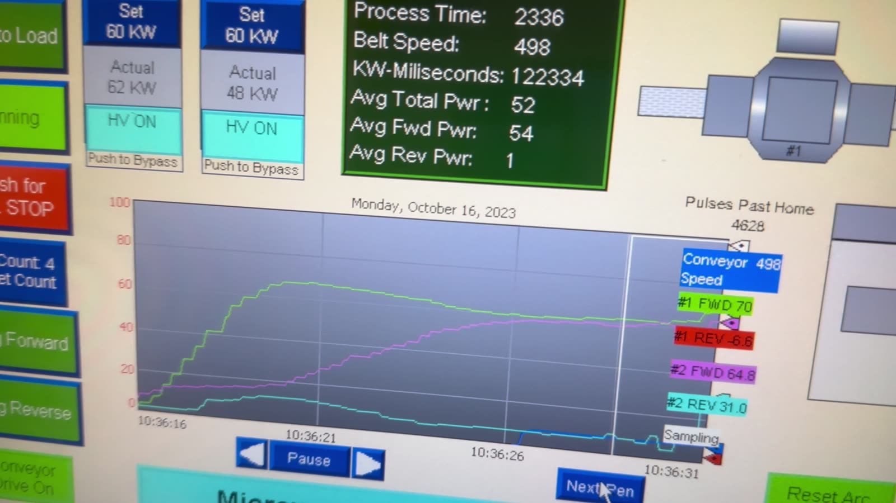
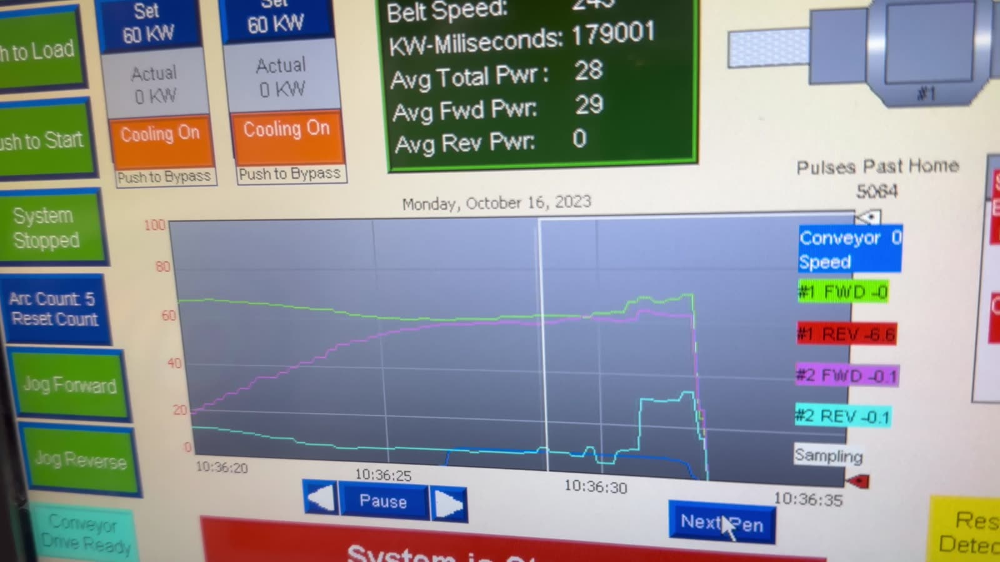
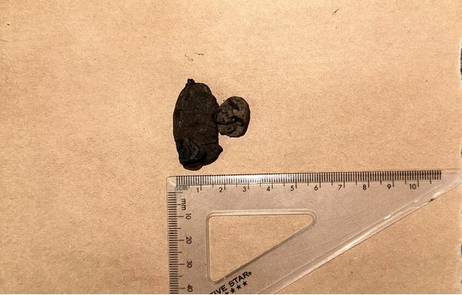

Scaling microwave dewatering of mineral feeds from a 3.2 kW bench unit to a 140 kW conveyorized pilot system at Sepro Mineral Systems.
- Organization
- Sepro Mineral Systems
- Role
- Metallurgical Engineering Co-op
- Tools
- Allen-Bradley HMI · Excel
- Output
- Minerals Engineering (2026), acknowledged
Specific microwave energy input fell 62.7% from bench to pilot scale, with up to 24% moisture removed at pilot scale.

- Operated the 140 kW pilot microwave system through its Allen-Bradley HMI: set forward power, monitored process response and responded to abnormal operating conditions.
- Analyzed moisture removal, power input, residence time and scale-up behaviour in Excel, including regression and power-density calculations for the bench-scale data.
Wet mineral feeds carry water that has to be transported and then evaporated downstream. Microwaves heat moisture throughout the material, which makes them attractive for dewatering, but bench results don't transfer directly to a pilot system: frequency, energy dose, absorbed power and arcing risk all change with scale.
- Bench: batch trials on a 3.2 kW, 2450 MHz unit mapping mass loss against specific energy.
- Pilot: 140 kW, 915 MHz conveyorized system, varying generator power and belt speed.
- Scale-up: compared specific energy (kWh/t) and moisture removal across scales.
| Bench | Pilot | |
|---|---|---|
| Frequency / power | 2450 MHz / 3.2 kW | 915 MHz / 140 kW |
| Specific energy input | ~1,068 kWh/t | ~397 kWh/t |
| Mass / moisture removed | up to 31% | up to 24% |
Specific energy input fell 62.7% from bench to pilot. Separately, calcium fluoride drying trials achieved a 15% energy reduction.

During one 120 kW run, reflected power on Generator 2 climbed to about 31 kW and the arc detectors logged five arc events before the interlock shut the system down. Rising reflected power usually means the load's dielectric properties are changing as it dries. That creates an impedance mismatch, sends energy back toward the generator and raises the risk of arcing.

PhotoNodules after bench-scale treatment, fractured by rapid internal steam generation.
- Marzoughi, O., Forster, J., Donald, J., and Pickles, C.A. (2026). Microwave dewatering of deep-sea polymetallic nodules: Bench-scale and pilot-scale studies. Minerals Engineering, 235, 109879. DOI
- Pilot run video, HMI control
Proprietary Sepro data and client information are not included. Figures shown are from published work or cleared for sharing.